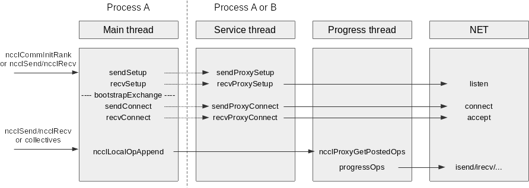
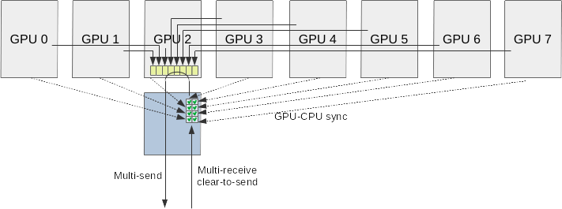
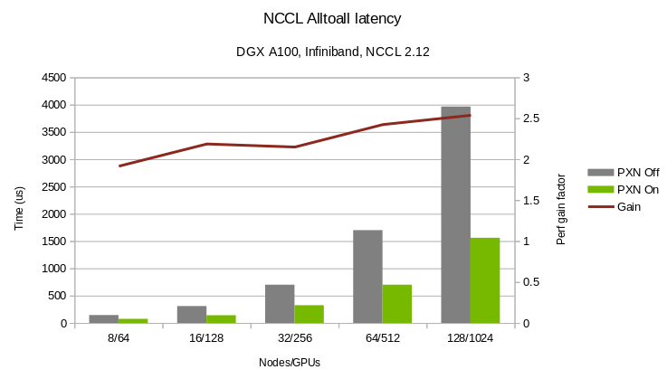

We allow for any rank to use a network proxy from another rank in the communicator, for memory allocation (NVB), but also for network connection establishment and inter-node communication.
As a consequence, the network connection establishment code is split in two parts:
To allow any process managing a GPU to use a proxy from another process to send (and in the future receive) data, the communication between those two entities is made using:
The remote memory allocation thread is extended into a full service thread, responding to any local rank's request, including creating the whole infrastructure to send from its local GPU. Connect and accept functions are split in two halves: sendSetup/sendConnect and recvSetup/recvConnect remain on the GPU side, but are almost empty, simply asking the service thread to create all connections and allocate memory, then simply map those memory regions and set the GPU pointers accordingly. New functions, sendProxySetup/sendProxyConnect and recvProxySetup/recvProxyConnect do most of the work, allocating memory, creating connections, and registering memory on the NIC. They then produce a memory map containing all information to map memory regions either on the same process or on a remote process, which is returned to the main thread for mapping.
The service thread also spawns the progress thread and allocates a shared memory for the fast communication between the main thread and the progress thread. Once initialization is done, the service thread no longer does anything, except at the end for tear-down and clean up.

The drawing above describes the split between main thread managing a GPU, the service thread managing a NIC and a local GPU for intermediate memory and the progress thread performing the actual communication with the NIC and GPU.
For receive operations, all threads will be in the same process. For send operations the main thread can be on a different process or managing a different rank than the two others.
The choice to use a remote NIC through NVLink is done in two places. During path computation, we compute as a second step cases which would benefit from accessing remote NICs through NVLink and mark their paths as PXN. That means when searching for rings and trees, that path will be available to easily close rings which don't have 2 local GPUs.
For point-to-point operations, when connecting to a remote rank, and if PXN_P2P_LEVEL is set to more than 0, instead of using the local NIC, we will lookup which NIC the remote rank defined as its "preferred" NIC. We'll then see whether we can use that NIC directly or through PXN. If PXN_P2P_LEVEL=1, we'll access that NIC directly if possible, but if PXN_P2P_LEVEL=2 then we'll find which local rank on the node defined that NIC as its preferred one, so that all ranks go through the same intermediate hop, and we can maximize aggregation for better latency.
Now that all ranks have the ability to send data through a remote GPU and network proxy, we can push all data to a given destination through a single rank per node. That means each rank will receive all messages from the node to a destination on the same rail. Instead of creating one connection between each source rank and each destination, and because all connections are now created between the same rank pair, we fuse all connections into one. Then instead of sending 8 messages independently, we wait for all messages to arrive then send all 8 messages as a single multi-send operation. In terms of NET plugin API, it actually takes the form of a multi-receive and independent sends.
The sender cannot know who on the node will send to that destination. But the receiver does know from which rank it will receive from. Given our IB protocol is receiver based (i.e. the receiver has to send a "clear-to-send" message to the sender before the sender can send anything), instead of sending a single "clear-to-send" message to the sender, the receiver now sends a multi-clear-to-send, providing up to 8 ranks it wishes to receive from, with corresponding buffers and sizes.
When all isend operations corresponding to the multi-receive have been initiated, the sender triggers a multi-send, pushing all messages as one.

The new network API is modified to add multi-receive capability, including tags. This API change is described in details in the net plugin documentation.
User interface is unchanged. New environment variables are added: NCCL_PXN_DISABLE and NCCL_PXN_P2P_LEVEL. NCCL_CROSS_NIC may also affect PXN choices so that an alltoall operation avoids (or not) to cross NIC rails.
Alltoall latency on 8 to 128 nodes is decreased by 1.9 to 2.5x.
